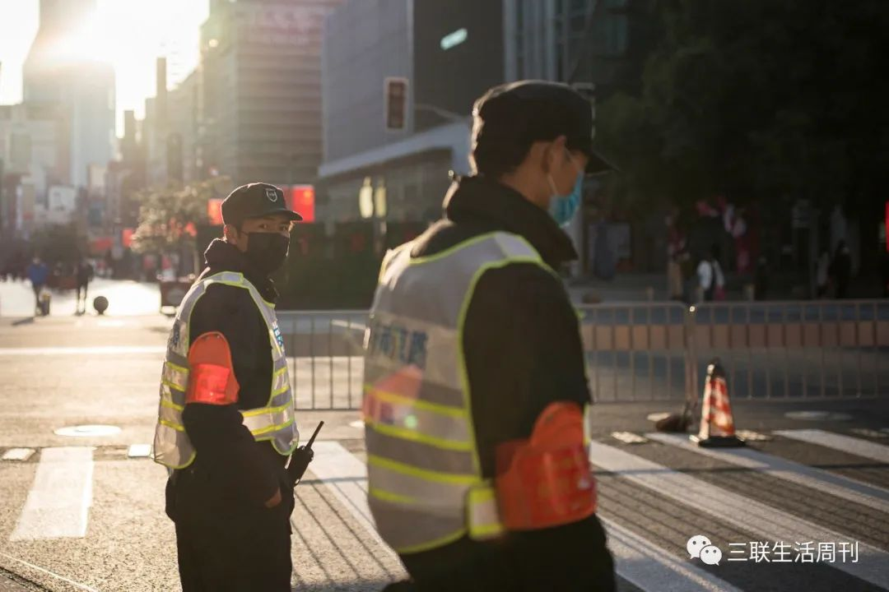
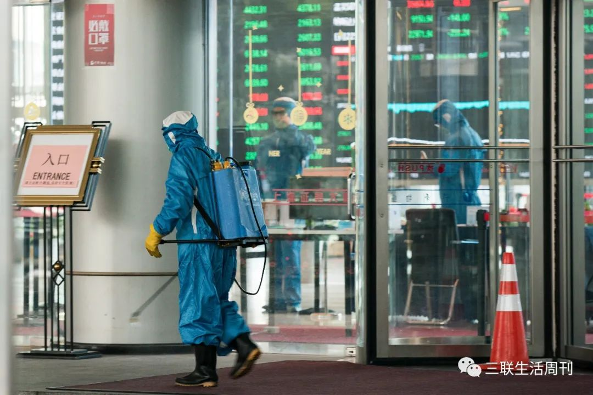
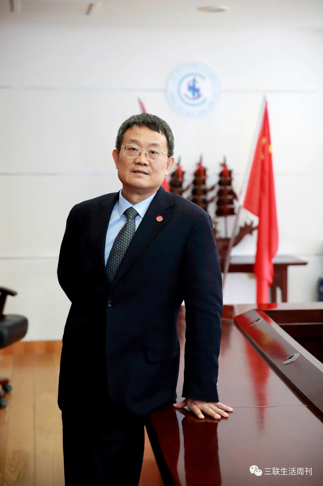
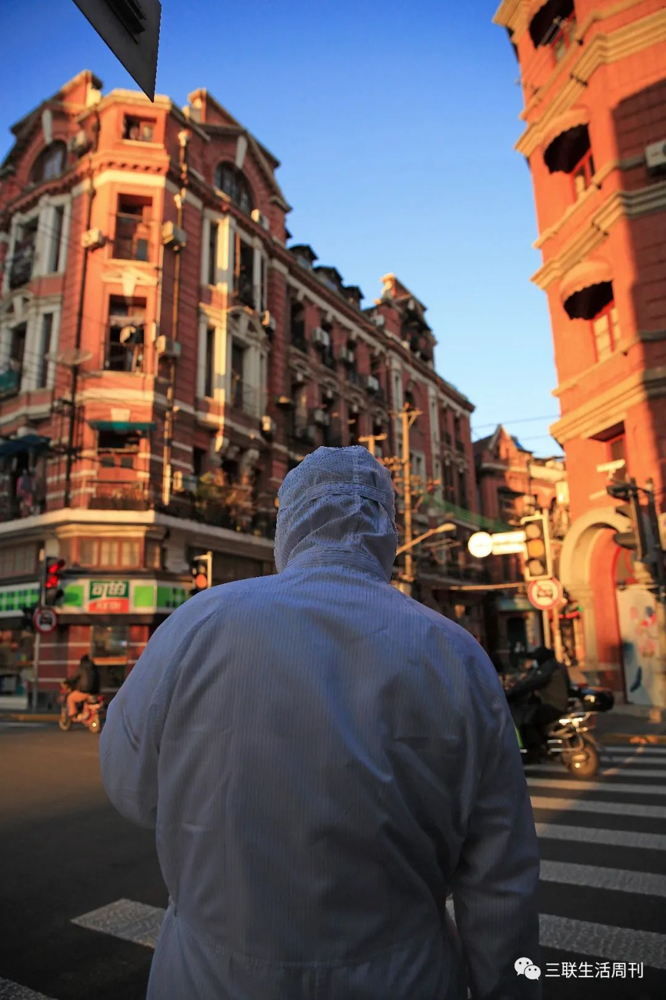
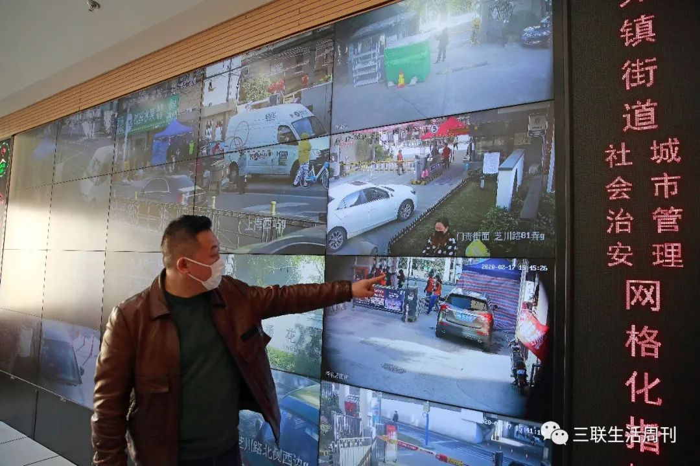
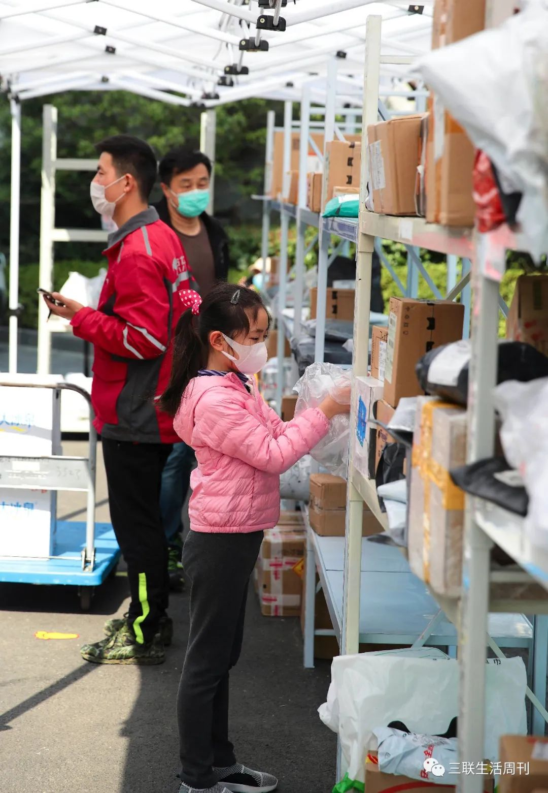
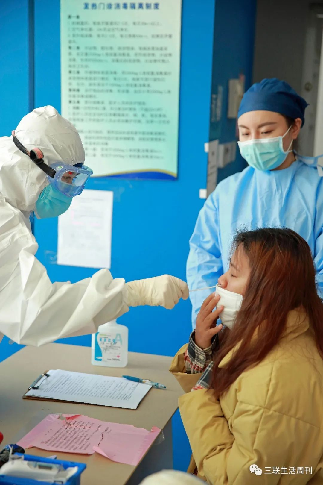

最新研究发现新冠病毒和穿山甲无直接关系，多地监狱爆发聚集性传染，以及其他 34 条疫情新闻
原文链接 备份链接 疫情发展 1.湖北卫健委：不允许核减已确诊病例。2月21日举行的湖北疫情防控新闻发布会上，湖北卫健委副主任涂远超表示，明确要求对已确诊的病例不允许核减，已核减的必须全部加回。此前，由于统计标准的一再变化，黄石、天门等多 …
作为一个2400万人的大城市，上海从2月9日开始每天的确诊人数只有个位数。整个疫情期间，没有疫情大爆发，没有医务人员的感染，确诊病例的治愈率达到了80%。
新冠疫情是一个重大的突发事件，上海给人的感觉却是利落且井然有序。在很短的时间内，每个人都知道自己应该站在哪个位置，做些什么。市民在“把病毒闷死”这件事上迅速达成共识，社区工作人员拉网排查高概率的传染源和切断传播途径，110个发热门诊作为哨点识别出确诊病例，所有确诊病例送到远在金山的上海公共卫生临床中心住院治疗。上海所有跟新冠肺炎相关的科室，最优势的医疗资源集中到公卫中心，帮助患者一起跟病毒搏斗。它的每一步处理，都值得当作样本对照疫情发展至今的状况。
记者｜杨璐
摄影｜张雷
不等宣布疫情，也能采取预防措施
卢洪洲所在的上海市公共临床中心的前身是上海传染病院，从市中心过去，大概有50公里远的路程，临近医院甚至还路过了农田。它虽然是一个三甲医院，现在却把守森严，不接受一般病人的问诊。根据上海市对传染病的分工，110家发热门诊是发现新冠病毒的哨点，那里确诊的病例，全部送到远离市区的这家医院住院。它是上海这次新冠肺炎疫情的最后一道防线，也是主战场。
SARS过后，上海市在金山圈地500亩，建立了这个永久性的、阻击和治疗传染病的堡垒。因为定位在保障上海，乃至国家的生物安全，它日常虽然是一座三甲医院，警惕性却从来没有放松。全球化的时代，没有远在天边的疫情，一架飞机的飞行时间就可能被乘客带入进来。公卫中心日常就有搜集全球疫情的工作习惯，比如2013年的H7N9新型禽流感病毒。

2月20日的上海街头，疫情是个突发事件，上海的处理却井然有序
这一次新冠肺炎疫情，上海公卫中心反应很敏捷。12月31日，中国疾控中心对世卫组织发出预警，武汉疾控中心对公众发布预警，第二天，上海公卫中心按照正常程序就开始发动起来。上海公卫中心院长朱同玉对本刊记者说：“在为期两天的培训里，公卫中心的医生、护士、后勤、保安等人员全都参加，一旦病人到医院，引导他走哪个电梯，去哪个楼，医生要做什么准备，梯队要做什么准备都进行了预演。1月6日，公卫中心针对武汉的不明原因肺炎成立了专项的应急办公室。这些准备在随后的首例新冠肺炎确诊病例的治疗上开始发挥作用，直到现在。”
2月3日，一名医务人员在上海证券交易所大楼大门外喷洒消毒液
当时，对武汉不明原因肺炎的了解并不清楚。上海公卫中心党委书记卢洪洲说，他们全员演习用的假想疾病是中东呼吸综合症。中东呼吸综合症是一种急性呼吸道感染，在新冠肺炎被确认之前，它和SARS属于冠状病毒引起的两种最严重的传染病。卢洪洲是世界卫生组织临床专家组专家、主要研究感染性疾病的诊治与发病机制，2013年的H7N9新型禽流感病毒的防控战，正是他拉响警报：要接诊医院紧急布置医院感染防控工作、标本送实验室重点研究新病毒的可能。那一次的防控被世卫组织称赞为“迅速、高效、专业”。世卫组织还将WHO新发传染病临床管理、研究与培训中心落户上海，任命卢洪洲为中心主任。

上海市公卫中心党委书记卢洪洲
除了内部的疫情预演，公卫中心还向上海市民进行了科普。12月31日13点38分，武汉卫健委在官网发布肺炎疫情通报：“目前已发现27例病例，其中7例病情严重。调查未发现明显人传人现象，未发现医务人员感染。”当天下午，上海公卫中心就在上海本地的《上观新闻》上以《武汉市卫健委通报肺炎疫情，冬春季“病毒性肺炎”怎么防，专家教您记住三招》为题目进行了肺炎预防的科普。1月9日，卢洪洲再次在本地媒体上提醒市民：即使天气寒冷，也要注意居室和办公室通风，通风可以减少空气中的病毒数量，从而减少感染。家人或办公室同事在流行季患病了，其他人应该注意隔离，以减少传染机会。病毒性肺炎和流感流行季，要尽量少到人群密集的场所。外出乘地铁、公交等公共交通回家后，要及时换掉外套，洗手、洗鼻。
新冠肺炎疫情爆发之后，谁有权力宣布疫情，以及宣布疫情的时机成了追责的焦点。在有经验的流行病学家看来，依法披露跟采取措施控制疫情并不矛盾。美国加州大学洛杉矶分校公共卫生学院副院长、流行病学资深终身教授张作风说：“没有人会阻止地方上采取预防控制措施。今年本来就是肺炎高发，预防措施不但可以把可能爆发的新冠肺炎控制下来，同时也可以减少其他类型肺炎。因为它们都是肺炎，采取的预防措施类似，那样不是很好吗？”
上海公卫中心这种在新冠肺炎疫情没有被宣布“人传人”、对新病毒还没有完全研究清楚的情况下，就保持警惕和在自己职责范围内提前采取措施的做法，是传染病防控领域的职业素养。张作风说：“尽管病因不太明朗，病的严重性不清楚，这不影响即时采取保护措施。如果知道传染源和传染途径，我们就切断传染源和传染途径。如果是呼吸道传播的话，我们戴口罩，如果是密切接触传播，我们就勤洗手勤洗澡，如果有中间宿主的话，我们就消灭中间宿主。在我们了解疾病的病因和复杂的病因机制之前，就应该采取防控措施。”
2月17日的上海街头，防控需要全社会的动员
跟SARS89.11%的同源性
实际上，流行病学家能从早期病例中嗅出传染病的味道。张作风说：“12月1日的病例没有华南海鲜市场的暴露史，提示一开始就可能存在人传人；也可能存在小型社区感染。12月26日的病例是一家三口的家族聚集性发病，人传人的可能性太大了。这里面并没有太多迷雾来影响我们采取预防措施。”
张作风远在海外，很早就开始关注新冠肺炎的发展。他说：“说老实话，呼吸道的新发传染病不是人传人的，可能还是很少见的。今年一月初，我和一位国内在SARS流行时非常有影响力的专家讨论，我俩都感到奇怪，为什么一开始对这个呼吸道的传染病定论为‘没有证据人传人’， 并且说‘可防可控’？估计是为防止群众恐慌以维持社会稳定。但这样的思维用于新发传染病爆发早期，客观上延误了及时采取预防措施有效控制疫情爆发的机会，以致促进了全国新冠肺炎的大流行。”
2月17日，上海某小区封闭情况不但有监控，还有区领导的乔装检查
上海公卫中心的流行病学家们对这个不明原因肺炎的推论，倒是不需要很长的链条，因为他们很快就得到了对这个病毒的科学研究结果。跟普通三甲医院不同的地方是，上海公卫中心的科研能力很强，它有上海第一家P3实验室。中心的张永振教授一直在做发现新病毒的研究，在过去的5年时间里，他和团队一共从我国发现了2000多种新病毒，目前全球有名字的病毒大概有4000到5000种，也就是说张教授和团队的发现相当于全球有名字的病毒三分之一还多。除了科研成果，这个研究使得张永振和团队建立了一套世界领先的发现新病毒、高通量测序体系，能在最快的时间内完成对未知病毒的测序。
因为一直在做新病毒的研究，张永振团队跟武汉中心医院、武汉疾控中心都有合作。1月3日，张永振的团队从武汉拿到不明原因肺炎病毒的标本，用了不到40个小时的时间，在1月5日，拿到了这种病毒的全基因组序列，根据测试数据绘制的进化树，证实武汉新型冠状病毒是历史上从未有过的。令人不安的是，这种病毒与造成SARS冠状病毒的同源性是89.11%。卢洪洲在接受本刊采访时说，1月5日，他们把这个发现，以及他们对这个发现的解读“鉴于该病毒与SARS疫情的冠状病毒同源，应是经呼吸道传播，建议在公共场所采取相应的防控措施以及在临床救治中采用抗病毒治疗”敲了单位的章，报告给国家卫生健康委员会。
89.11%的同源性意味着什么？美国俄亥俄州立大学王秋红教授是病毒学家，实验室研究重点是肠道杯状病毒和冠状病毒。她向本刊记者解释：“测序之后，知道它是与SARS冠状病毒同源性有80%了，不能就说是有人传人，还要结合流行病学的资料。人类目前发现的六个冠状病毒里，四个致病性轻的都跟SARS的相差比较大，可新冠肺炎的冠状病毒基因序列跟SARS更接近，就应该警觉起来。”理论上讲，病毒测序只是知道它的型别，要结合它的传染力、致病力、致死力才能判断出它的严重性，可如果真是等到这些指标，需要的临床样本也比较多，同时也说明疫情在扩散。
新发现的冠状病毒没有发现明显的人传人，也要把它当作人传人来处理。王秋红说：“很多病毒刚从动物传到人，没有很明显人传人，可能因为它刚刚找到新宿主传染力不大，也可能样本量不够大。新冠肺炎的这个是RNA病毒，变异是很快的，它每次感染一个人，从这个人身上排出来，都可能会有变化。随着感染的人越来越多，可能会越来越适应这个新的宿主，演变成人传人。所以，理想的情况是在早期切断它的传播途径，病毒就找不到下一个宿主，减少了在人这个群体里演化的途径，被消灭了。”
这个全基因组序列的结果不是秘密，很快在全球范围内就被公布了。1月9日，中国工程院院士徐建国公布，专家组认为本次不明原因的病毒性肺炎病例的病原体初步判定为新型冠状病毒。徐建国院士在接受新华社采访时说：“此次疫情的新型冠状病毒不同于已发现的人类冠状病毒，对该病毒的深入了解需要进一步科学研究。”
王秋红所在的实验室研究重点之一就是冠状病毒，可她并不认为得出需要警惕这种新冠状病毒的结论是个冷僻的专业判断。“国内临床的专家、经历过SARS的流行病专家，再加上做冠状病毒研究的这些病毒学家，他们在一起应该能够跟我得出相同的结论。”王秋红说。张作风也对于这次疫情中，人传人确定的时机感到疑惑：“基因测序之后，发现它是冠状病毒，跟SARS还有很多相同之处，更加要想到人传人，再加上12月份第一例没有海鲜市场暴露史、一家三口感染的这些病例，为什么一直要坚持不是人传人，或者所谓的没有证据人传人呢？我不知道这是一个什么原因，不大符合常理。”
市民：警钟敲得特别快
作为一个人口超过2400万的超级城市，上海从2月9日起，每天确诊人数只有个位数，整座城市却没有因此松口气，随着复工潮即将到来，甚至绷得更紧。小区刚封闭的时候，只在进门时检查出入证，我们采访的这个礼拜，出门也要查。门岗告诉我们，担心正在隔离期的居民出小区，他们必须到隔离期满才能领到出入证。
 2月21日，虹桥火车站是进入上海的关卡，要测体温和登记行迹
2月21日，虹桥火车站是进入上海的关卡，要测体温和登记行迹
即便能自由活动，市民也大部分时间都待在家里。拎得清的上海人在“把病毒闷死”这件事上达成了高度统一。上海疫情防控的难度不在于居民不重视，恰恰相反，工作量来自于居民希望滴水不漏。“我们时常接到居民电话，说听到邻居一直空置的房子门响了，他们不敢出门看，要居委会上来敲门，一定跟对方见面，问清楚人从哪里来。”汤晓梅说。真如街道给重点地区返沪隔离的住户装了报警磁条，只要开门，总控中心和居委书记的手机上就弹出消息。这样做除了确保不外出，也是向邻居们证明小区是安全的。街道工作人员说，没装磁条前，一听说楼里有人医学隔离，邻居就很紧张，不停打12345热线，担心隔离的人不待在家里，甚至要求社区派人24小时守到人家门口。

2月22日，上海人在“闷死病毒”这件事上达成高度共识，日常所需大量依靠网购
经历过1988年的甲肝、2003年的SARS，很多上海人对传染病的警钟敲得特别快。市民鱼老师（化名）说，1月初，她所在的妈妈群里就有人发了武汉不明原因肺炎的消息。“我大脑的应急反应一下就想起了非典。那时候我还在上学，每天早上第一件事就是测体温，家长签字。一旦有同学发热整个班级都要隔离。想起非典，大概是上海人未雨绸缪的性格吧，我就告诉家里老人要准备好口罩，自己也下单买了N95。”鱼老师说。1月20日，新冠肺炎人传人的消息一公布，上海市面上的口罩就卖光了。“我身边的朋友里，女同胞普遍意识都特别强。男同胞，长辈们可能一开始不觉得严重，洗手、戴口罩不太愿意，可随着报道的深入，他们也转变了，从被动配合到主动积极。”鱼老师说。
上海人的这种未雨绸缪也体现在上海公卫中心的战略储备上。卢洪洲说：“2004年设计这个医院的时候，按照当时全球可能出现的新发传染病运行情况、需要隔离治疗的情况，我们做了一个预测，认为327张床位能够应付疫情，所以建了4栋负压病房。遇到327张床位应付不了的疫情，建医院的时候还预留了600张床位的空地，可以在两个礼拜之内建成另外600张床。当时的计划是一旦327张床中使用了一半，预留床位的工程就要启动，不能等到住满了再建。这次新冠肺炎，作为预案，我们现在启动了预留床位里的200张床。我估计这次只是备着，现在一期的327张床里，还有一栋楼没用上呢。”
床位在新冠肺炎的抗疫中非常重要。卢洪洲说：“这个病症大多数是轻症、少数是重症，并不可怕，还是有办法的。关键是要让床等人，把所有的感染者全部收治，传染源就控制住了。确诊和疑似病例的增量就往下走了。上海就是阳性全收，不存在在家隔离。家里即便是四室一厅，还是会出很多问题。集中收治在一起，床位如果紧张，也可以加床，因为如果是轻症，都是同一种病毒，住在一起彼此不会有太大的影响。”
除了负压病床，跟传染病搏斗的装备在上海公卫中心也是一项日常储备。卢洪洲说：“新冠疫情发生之后，我们不需要临时购买装备。公卫中心这些医疗器材，日常就根据当时有多少病人，准备5天的消耗。防护服、口罩、正压呼吸器都有储备，特别是正压呼吸器，我们本身就是负压病房，再用上正压呼吸器就是双保险，医务人员不会感染。对医疗队伍的保护，我们早就做好了。”
2月18日 ，东方医院发热门诊正在给病人进行咽拭子测试
我们在采访时遇到行政楼的大堂里摆了非常多的旅行箱，那是上海市内医院的医护人员来这里上班带的行李。除了把确诊病例集中到公卫中心，上海这一次也采用了集中优势医疗资源的方式，全市跟新冠肺炎相关科室的专家和医护力量随时征调到公卫中心工作，大概有170多名外援医生到公卫中心来常驻或者参加会诊。华山医院感染科主任张文宏、瑞金医院急诊科主任毛恩强、中山医院呼吸科教授朱蕾、感染科主任胡必杰等组成了医疗救治专家组。他们每天与进驻在负压病房里救治的医生们通过远程形式讨论患者的治疗方案。公卫中心有一个P3实验室，每天对确诊病人进行标本采集和化验，这些数据再给到临床作为参考。专家组、医生们用自己的临床经验，这些精细的数据，为每一个住院患者制定专属的治疗方案，“一个个过堂”、“一人一策”。
上海公卫临床中心做了该做的事情，从疫情防控开始竖立的道道关卡，一直到精细化的治疗，截至本刊发稿，2400万人口的上海市发现确诊病例335例，治愈出院249例，治愈出院率为74.3%。
⊙文章版权归《三联生活周刊》所有，欢迎转发到朋友圈，转载开白请联系后台。未经同意，严禁转载至网站、APP等。
点击下图，下单新冠特刊
「准备复工」

*点击阅读原文，进入周刊书店，**购买**【新冠肺炎专刊组合】*
原文链接 备份链接 疫情发展 1.湖北卫健委：不允许核减已确诊病例。2月21日举行的湖北疫情防控新闻发布会上，湖北卫健委副主任涂远超表示，明确要求对已确诊的病例不允许核减，已核减的必须全部加回。此前，由于统计标准的一再变化，黄石、天门等多 …
原文链接 备份链接 【财新网】（记者 马丹萌 邸宁）“我们是从至暗时刻走过来的。面对这样一个危险的病毒，上海国际化程度高，又是国内交通贸易枢纽，人口流动为数庞大，疫情一旦暴发，如果不及早设防，后果不堪设想。” 上海医疗救治专家组组长、华山 …
原文链接 备份链接 【财新网】（记者 王婧）新冠肺炎疫情持续已近两月，中国疾控体系的短板暴露无遗。2月27日，在广州市新闻发布会上，国家卫健委高级别专家组组长钟南山称，各级疾控中心（CDC）了解疫情，却没有对外发布的权力，只能逐级上报。这 …
原文链接 备份链接 新冠肺炎疫情的发展形势，正在全球范围内急剧变化。 根据中国各省卫健委官方发布消息来看，截至 2 月 24 日上午 9 时，全国已有 23 个省（自治区、直辖市）在 23 日全天的新增确诊病例为零，其中包括北京、湖南、河 …
原文链接 备份链接 作者 | 第一财经 马晓华 突然闯入武汉的新冠病毒，给中国带来了一场非常战“疫”。 2月22日，距离武汉市卫健委发布“不明原因肺炎”的第一则通报（2019年12月31日），仅仅52天。但是病例数，已经从最初与华南海鲜 …